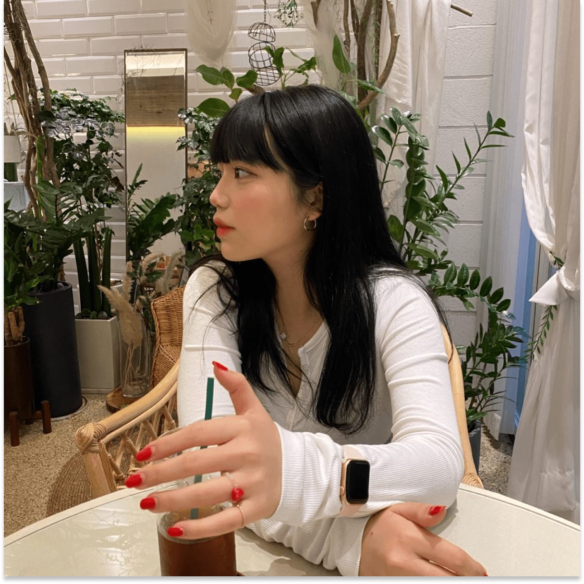

안녕하세요 ? 개발자를 꿈꾸며 더 넓은 견해로 세상을 바라보고 ,
더 섬세하고 세밀한 사람이 되고자 항상 노력하는 이유나라고
합니다.
지금부터 저에 대해 , 그리고 제가 한 작업들을 보여드리도록
하겠습니다.
저의 노력과 애정이 듬뿍 담긴 프레임워크 작업, 개성이 담긴
사이트들을 함께 보실까요 ?
YOUNA
Add elegance and charm to
your site with coding that
expresses your
when I start coding,
it will be timeless
for my story.

HELLO EVERYONE !
ABOUT ME
when I start coding,
it will be timeless
for my story.
it will be timeless
for my story.
LEADERSHIP
저는 먼저 나서서 일을 해결하는 타입입니다.
이런 강점 덕분에 팀워크에서도 적극적으로 나서는 편입니다.
리더십이 뛰어나 집단 내 사람들과의 상호작용을 촉진시키고 ,
팀의 조화와 화합을 중시해 늘 좋은 팀프로젝트를 한 경험이
많습니다.
팀을 꾸려 타인을 이끌고 팀워크와 소통으로 팀의 성과를 이루는
과정에서 타인의 성장을 도모하여 협동심이 뛰어납니다.
POSITIVE
저는 평소 사람들과 어울려 어떤 일을 해내는 것을 좋아합니다.
그 속에서 얻어지는 긍정적인 시너지와 밝은 에너지를 통해
원동력을
얻기 때문입니다. 저는 남을 웃게 만드는 입담과 에너지가 있어
건강하고 밝은 에너지를 주위에 전파하는 능력이 있고,
타인과 상호작용 능력이 뛰어나 어떤 상황에서든 잘 적응합니다.
It is more than just coding; it is stories filled with
inspiration, creativity, and passion that will bring life to my
coding.
받아 만들어진 클론 사이트입니다.
클론 사이트는 필라이즈의 기능을 충실히 재현하며,
독특한 장점을 제공합니다. 사용자들은
클론 사이트를 통해 원본 사이트와 동일한
편의성과 신뢰성을 경험할 수 있습니다.
지금 클론 사이트를 만나보세요!
받아 만들어진 클론 사이트입니다.
클론 사이트는 필라이즈의 기능을 충실히 재현하며,
독특한 장점을 제공합니다. 사용자들은
클론 사이트를 통해 원본 사이트와 동일한
편의성과 신뢰성을 경험할 수 있습니다.
지금 클론 사이트를 만나보세요!
받아 만들어진 클론 사이트입니다.
클론 사이트는 필라이즈의 기능을 충실히 재현하며,
독특한 장점을 제공합니다. 사용자들은
클론 사이트를 통해 원본 사이트와 동일한
편의성과 신뢰성을 경험할 수 있습니다.
지금 클론 사이트를 만나보세요!
받아 만들어진 클론 사이트입니다.
클론 사이트는 필라이즈의 기능을 충실히 재현하며,
독특한 장점을 제공합니다. 사용자들은
클론 사이트를 통해 원본 사이트와 동일한
편의성과 신뢰성을 경험할 수 있습니다.
지금 클론 사이트를 만나보세요!